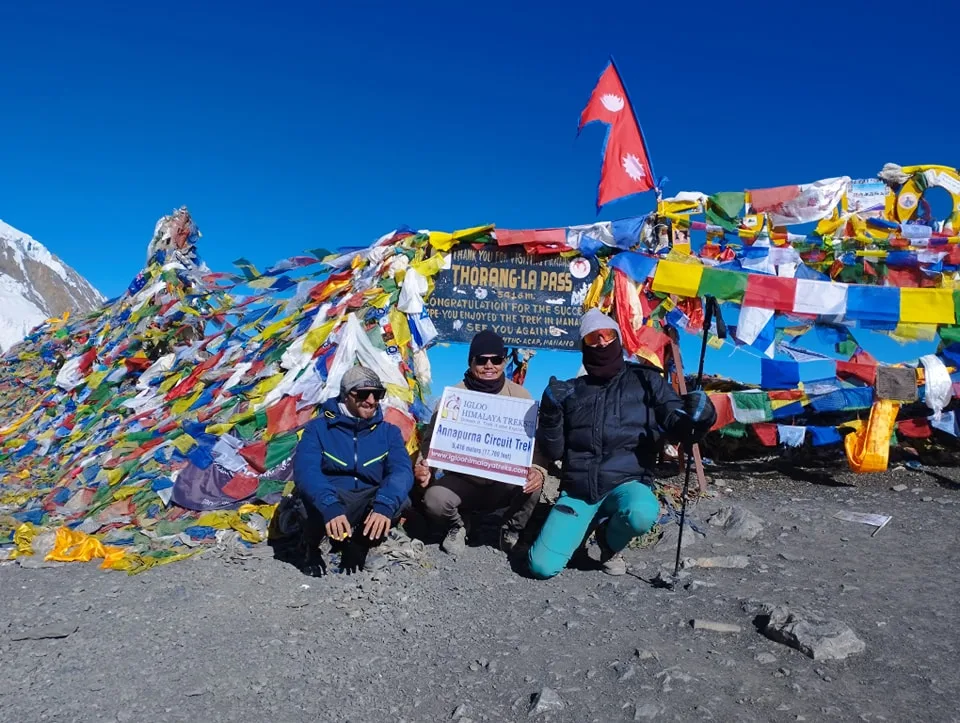
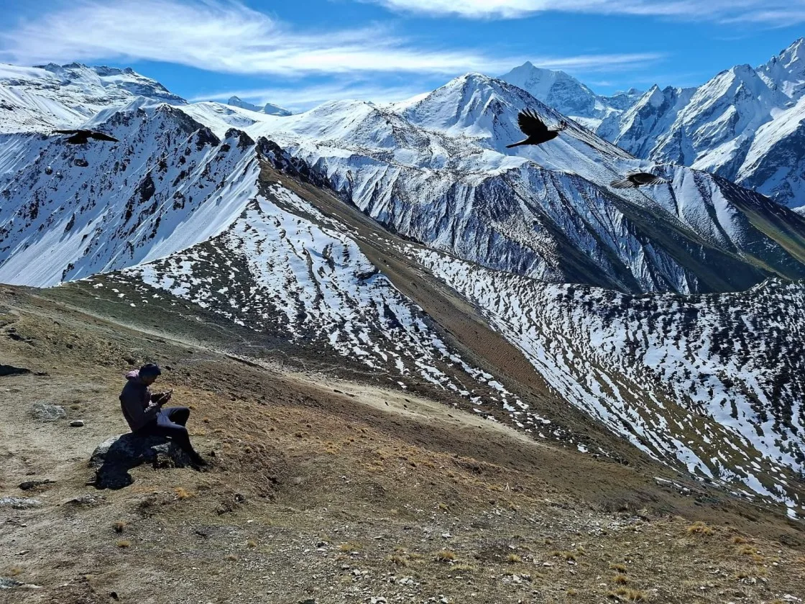
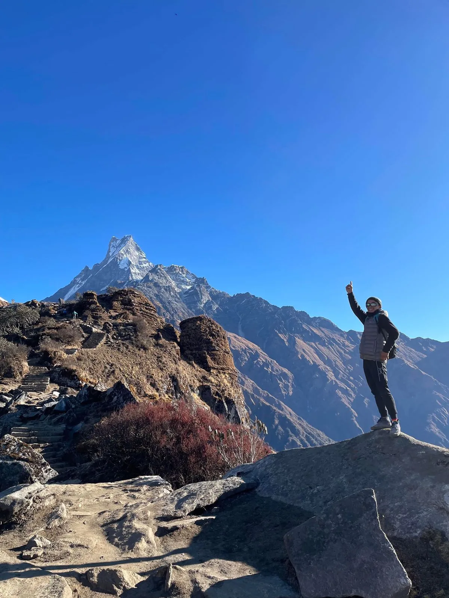

1. Nepal Trekking Landscape for 2027: Key Shifts, Roads & New Realities

As we look ahead to the 2027 trekking seasons, Nepal's outdoor landscape continues to evolve rapidly. While the majestic 8,000-meter giants—Mount Everest, Kanchenjunga, Lhotse, Makalu, Cho Oyu, Dhaulagiri, Manaslu, and Annapurna—remain as timeless and awe-inspiring as ever, the infrastructure, connectivity, and trail dynamics connecting them have changed significantly.
Key developments shaping trekking in Nepal for 2027 include:
- Mandatory Licensed Guide Regulations: The Nepal Tourism Board (NTB) enforces mandatory licensed trekking guides across all national parks and conservation areas to enhance trekker safety, prevent fatal solo accidents, and ensure fair employment for mountain communities.
- Road Expansion & Alternative Trail Preservation: While dirt roads have pushed further into lower river valleys in Annapurna and Manaslu, dedicated trekking networks (such as the NATT - Natural Annapurna Trekking Trails and new pedestrian suspension bridges in the Budhi Gandaki gorge) allow hikers to bypass roads and enjoy uninterrupted wilderness.
- Modern Teahouse Amenities: Today's Himalayan teahouses offer unprecedented comfort. High-speed satellite WiFi networks (Everest Link and AirJaldi), solar-powered charging stations in rooms, gas-heated hot showers, and diverse menus (from homemade apple pie to fresh yak cheese pasta alongside the classic Dal Bhat) make multi-week expeditions more comfortable than ever.
- Flight Shifts & Overland Corridors: Lukla flights now operate primarily out of Ramechhap (Manthali Airport) during peak spring and autumn months to relieve air congestion in Kathmandu, while road improvements to Dharapani, Syabrubesi, and Taplejung provide reliable overland options for weather-independent trekking.
With classic trails like Everest Base Camp and Poon Hill experiencing high visitor numbers during peak October and April, smart hikers in 2027 are increasingly choosing alternative circuits. Routes like the Manaslu Circuit, Gokyo Lakes & Cho La Pass, and the Kanchenjunga Circuit deliver identical or superior mountain vistas with a fraction of the crowds.
2. The Master Comparison Matrix: Top 10 Treks Ranked by Duration, Cost & Difficulty
To help you quickly compare options based on your available vacation days, fitness level, budget, and mountain preferences, here is the master comparison matrix of Nepal's top 10 treks for 2027:
| Trek Name | Region | Duration | Max Altitude | Difficulty | Est. Cost (USD) | Key Vibe / Best For |
|---|---|---|---|---|---|---|
| 1. Manaslu Circuit | Manaslu | 13 – 14 Days | 5,106m (Larkya La) | Challenging | $1,150 – $1,550 | #1 Best Wilderness Teahouse |
| 2. Everest Base Camp | Khumbu | 12 – 14 Days | 5,545m (Kala Patthar) | Challenging | $1,350 – $1,850 | Ultimate World Icon |
| 3. Annapurna Circuit | Annapurna | 12 – 16 Days | 5,416m (Thorong La) | Challenging | $950 – $1,350 | Greatest Ecological Variety |
| 4. Gokyo Lakes & Cho La | Khumbu | 15 – 18 Days | 5,357m (Gokyo Ri) | Strenuous | $1,550 – $2,100 | Superior Scenery & Turquoise Lakes |
| 5. Annapurna Base Camp | Annapurna | 9 – 11 Days | 4,130m (ABC) | Moderate | $750 – $1,050 | 360° Mountain Amphitheater |
| 6. Langtang Valley | Langtang | 7 – 8 Days | 4,773m (Kyanjin Ri) | Moderate | $580 – $850 | Best Short High-Alpine Escape |
| 7. Upper Mustang | Mustang | 12 – 14 Days | 4,200m (Chogo La) | Moderate | $1,750 – $2,400 | Forbidden Kingdom & Rain-Shadow |
| 8. Mardi Himal Ridge | Annapurna | 5 – 6 Days | 4,500m (Viewpoint) | Moderate | $450 – $650 | Best Quick 5-Day Ridge Panorama |
| 9. Upper Dolpo Circuit | Dolpo | 22 – 25 Days | 5,360m (Kang La) | Very Strenuous | $3,200 – $4,500 | Ultimate Trans-Himalayan Isolation |
| 10. Kanchenjunga Circuit | Taplejung | 20 – 24 Days | 5,143m (Pangpema) | Very Strenuous | $2,200 – $3,100 | Far Eastern Frontier Giant |
3. Everest Base Camp Trek (Classic 14-Day & Heli-Return Options)

The Everest Base Camp (EBC) Trek remains the undisputed gold standard of global trekking. Standing at the foot of Mount Everest (8,848.86 m / 29,031.7 ft) beside the Khumbu Icefall is a deeply transformative milestone for outdoor adventurers.
Why EBC remains iconic in 2027:
- Sherpa Culture & Sacred Monasteries: The trail immerses you in Sherpa mountain culture, from the bustling trading hub of Namche Bazaar (3,440m) to Tengboche Monastery (3,860m), where monks chant morning prayers beneath the pyramidal spire of Ama Dablam.
- Unrivaled Mountain Vistas: Ascending Kala Patthar (5,545m) at sunrise provides the most intimate, unobstructed panorama of Everest, the South Col, Nuptse, and Pumori anywhere on Earth.
- Modern 2027 Variants: Beyond the classic 14-day teahouse trek, popular options include the EBC Trek with Helicopter Return (saving 4 days of downhill walking by flying directly from Gorak Shep to Kathmandu) and the Road-Based EBC Trek via Tham Danda (which bypasses Lukla flights entirely).
4. Annapurna Circuit Trek: How to Hike It the Right Way in 2027
Once hailed as the greatest long-distance trek in the world, the Annapurna Circuit has generated debate in recent years due to local dirt road construction. However, in 2027, hiking the Annapurna Circuit the "right way" remains an extraordinary experience.
By utilizing the NATT (Natural Annapurna Trekking Trails) network, marked with red-and-white trail blazes, you stay on dedicated footpaths along the opposite side of the river from the road. The circuit takes you on an epic ecological journey:
- Subtropical to Trans-Himalayan Desert: You start in lush subtropical terraces surrounded by roaring waterfalls in Besisahar and Chame, climb through pine and fir forests in Manang, and enter the stark, Tibetan-style high plateau over Thorong La.
- Crossing Thorong La Pass (5,416m / 17,769ft): The monumental high point of the trek requires an exhilarating pre-dawn start under starry skies, crossing the windswept col before descending into the sacred pilgrimage town of Muktinath.
- Side Trip to Tilicho Lake (4,919m): Adding the detour to the world's highest glacial lake in Manang elevates the circuit to one of the most visually stunning alpine adventures on the planet.
5. Manaslu Circuit Trek: The #1 Wilderness Teahouse Alternative to Annapurna

If you ask seasoned Himalayan guides to name the best overall trek in Nepal for 2027, the overwhelming answer is the Manaslu Circuit Trek. Circling Mount Manaslu (8,163m)—the "Mountain of the Spirit"—this trek delivers everything hikers loved about the Annapurna Circuit thirty years ago, before road construction.
Key highlights that make Manaslu #1 for 2027:
- Restricted Wilderness Seclusion: As a designated Restricted Area requiring a special permit, minimum two trekkers, and a licensed guide, visitor numbers are strictly managed. The trail never feels crowded.
- Pure Foot Trails: From Machhakhola through Jagat, Deng, and Namrung, you walk on pristine trails carved into soaring river gorges, crossing dramatic suspension bridges high above the turquoise Budhi Gandaki river.
- The High Crossing of Larkya La (5,106m): A thrilling pass crossing that navigates past frozen glacial lakes and moraines, offering sweeping vistas of Himlung Himal, Cheo Himal, and the Annapurna massif.
- Optional Tsum Valley Extension: Combining Manaslu with the sacred, hidden Tsum Valley (18 days total) takes you into an ancient Buddhist enclave where violence toward animals is forbidden and centuries-old nunneries cling to granite cliffs.
6. Langtang Valley & Kyanjin Ri: The Best Short High-Alpine Trek from Kathmandu
Located just north of the Kathmandu Valley, the Langtang Valley Trek (7–8 Days) is Nepal’s premier short alpine expedition. If you have limited vacation time or wish to avoid the stress and expense of domestic mountain flights, Langtang is unbeatable.
Why Langtang is a top choice in 2027:
- Overland Accessibility: A scenic 6-to-7-hour drive from Kathmandu to Syabrubesi brings you right to the trailhead, completely eliminating flight cancellation risks.
- Incredible Alpine Scenery in Just 4 Days: You hike up through bamboo and rhododendron forests along the Langtang Khola to emerge into the wide, U-shaped glacial valley at Kyanjin Gompa (3,870m), surrounded by 7,000m giants like Langtang Lirung and Dorje Lakpa.
- Summiting Kyanjin Ri (4,773m) and Tserko Ri (4,984m): Day hikes from Kyanjin Gompa allow trekkers to reach nearly 5,000 meters, taking in 360-degree views of Himalayan icefalls and the Tibetan border peaks.
- Rich Tamang Culture: Langtang is deeply rooted in Tamang Buddhist heritage, famous for traditional yak cheese factories, ancient mani stones, and resilient, welcoming mountain communities.
7. Annapurna Base Camp (ABC / Sanctuary): The Amphitheater of Giants
The Annapurna Base Camp (ABC) Trek (9–11 Days), historically known as the Annapurna Sanctuary, offers an intimate close-up encounter with an 8,000-meter peak without the grueling high-pass challenges of other circuits.
The climax of the trek is walking straight into the Annapurna Sanctuary, a massive natural oval amphitheater surrounded by a continuous ring of towering summits: Annapurna I (8,091m), Annapurna South (7,219m), Hiunchuli, and the sacred, fluted peak of Machapuchare (Fishtail, 6,993m).
With a maximum altitude of 4,130m at Base Camp, ABC has a significantly lower risk of severe altitude sickness than Everest or Manaslu, making it the perfect choice for enthusiastic first-timers, families, and moderate hikers. Plus, the descent features natural hot springs at Jhinu Danda to soak sore muscles.
8. Gokyo Lakes & Cho La Pass: The Ultimate Everest Visual Upgrade

For trekkers who want to see Mount Everest but crave more variety, greater solitude, and dramatic glacial beauty, the Gokyo Lakes & Cho La Pass Trek (15–18 Days) is the ultimate upgrade to standard EBC.
Instead of hiking directly up the Khumbu highway, this route branches northwest into the tranquil Dudh Koshi valley:
- The Six Sacred Turquoise Lakes: The trail traces a chain of six high-altitude oligotrophic lakes, glowing vibrant turquoise against the dark moraines of the Ngozumpa Glacier (the longest glacier in the Himalayas).
- The Gokyo Ri Panorama (5,357m): Many veteran mountaineers consider the view from Gokyo Ri superior to Kala Patthar. Standing on the summit, you can simultaneously view four of the world's six highest peaks: Mount Everest (8,848m), Lhotse (8,516m), Makalu (8,485m), and Cho Oyu (8,188m).
- The Cho La Pass Traverse (5,420m): Crossing the glaciated Cho La col requires strapping on microspikes to traverse an alpine ice sheet before rejoining the main Everest Base Camp trail at Dzongla.
9. Upper Mustang: The Trans-Himalayan Forbidden Kingdom Behind the Clouds
Trekking into Upper Mustang (12–14 Days) feels like stepping back centuries into an intact Tibetan world. Tucked behind the main Himalayan wall in the rain-shadow of Annapurna and Dhaulagiri, Mustang is a desert landscape of wind-sculpted sandstone canyons, ochre cliffs, and ancient cave dwellings.
Why Upper Mustang is unique in 2027:
- The Only Prime Summer / Monsoon Trek: Because the Himalayas block the Indian monsoon from reaching the Tibetan plateau, Upper Mustang is dry, sunny, and ideal for trekking between June and September, when the rest of Nepal experiences heavy rains.
- The Walled Capital of Lo Manthang: The destination is the 15th-century walled kingdom of Lo Manthang, home to ancient Buddhist monasteries (gompas), royal palace ruins, and the vibrant annual Tiji Festival.
- Preserved Cultural Autonomy: Restricted Area permits ($500 USD per person for the first 10 days) preserve this sensitive cultural enclave, making it one of the most culturally authentic journeys in Asia.
10. Mardi Himal Ridge Trek: The Premier 5-Day Scenic Short Trek
If you have only 5 to 6 days and want an exhilarating high-mountain experience starting from Pokhara, the Mardi Himal Trek has emerged as Nepal’s most popular short trek for 2027.
Unlike valley floor treks that wind along rivers, Mardi Himal climbs directly along a narrow alpine ridgeline directly beneath the south face of Machapuchare (Fishtail). In just four days, you climb from dense mossy rhododendron forests at Forest Camp (2,550m) to the open alpine grasslands of High Camp (3,580m) and the Mardi Himal Viewpoint (4,200m – 4,500m), with uninterrupted views of Annapurna South, Hiunchuli, and Fishtail towering right before you.
11. Remote Wilderness Expeditions: Upper Dolpo & Kanchenjunga Circuit

For experienced backpackers and wilderness purists who have already completed Everest and Annapurna, Nepal’s true wilderness frontiers lie in the far west and far east:
- Upper Dolpo Circuit (22–25 Days): Located in far western Nepal, Dolpo is the ultimate wilderness sanctuary. It features the hypnotic, deep-turquoise waters of Shey Phoksundo Lake, centuries-old Bon and Tibetan monasteries, high passes over Kang La (5,360m), and the rugged landscapes immortalized in Peter Matthiessen's classic The Snow Leopard.
- Kanchenjunga Circuit (20–24 Days): In the far eastern corner of Nepal bordering Sikkim and Tibet, this trek circles Mount Kanchenjunga (8,586m), the world's 3rd highest peak. You visit both the North Base Camp at Pangpema (5,143m) and South Base Camp at Oktang (4,730m), traversing the challenging Sele La high pass across untouched rhododendron and larch reserves.
12. Seasonal Timing & Weather Windows in 2027 (Spring, Autumn, Monsoon, Winter)
Timing your trek is the single biggest determinant of weather stability, mountain visibility, and thermal comfort:
Autumn (October – November) · Top Rated
The Gold Standard: Post-monsoon high-pressure systems deliver diamond-clear skies, minimal rainfall, stable daytime temperatures, and razor-sharp mountain panoramas across all regions.
Best for: Everest Base Camp, Manaslu Circuit, Annapurna Circuit, Gokyo, Kanchenjunga.
Spring (March – May) · Second Best
The Season of Colors: Temperatures warm steadily, daylight hours lengthen, and lower hills burst into crimson rhododendron blooms. Higher passes retain scenic snowcaps, and mountaineering expeditions gather at 8,000m base camps.
Best for: EBC, Langtang, Annapurna Sanctuary, Peak Climbing.
Summer / Monsoon (June – August)
Rain-Shadow Sanctuary: While southern Nepal receives heavy monsoon rains, the trans-Himalayan Tibetan plateau sits in the rain-shadow of the mountains and remains dry and sunny.
Best for: Upper Mustang, Upper Dolpo, Nar Phu Valley.
Winter (December – February)
Crisp Cold & Solitude: High passes face heavy snow and sub-zero nights (-20°C), but lower-altitude routes offer sunny, crisp days with virtually zero tourists.
Best for: Ghorepani Poon Hill, Mardi Himal, Langtang, Chisapani.
13. Budgeting, Costs & Permit Regulations in Nepal for 2027
Budgeting accurately for a trek in Nepal requires factoring in permits, mandatory guide logistics, teahouse expenses, and transport:
| Expense Category | Estimated Cost (USD) | Key Details & Regulations |
|---|---|---|
| Licensed Trekking Guide | $30 – $40 / day (group total) | Mandatory under NTB regulations; includes guide salary, food, lodging, and insurance. |
| Himalayan Porter | $22 – $28 / day (group total) | Carries up to 20kg of gear for two trekkers; ensures ethical porter treatment. |
| Teahouse Food & Lodging | $35 – $50 / day per person | Includes 3 hearty meals (unlimited Dal Bhat refills), tea/coffee, hot shower, and room. |
| National Park Permits | $23 – $30 per person (NPR 3,000) | ACAP (Annapurna), Sagarmatha (Everest), Langtang National Park. |
| Restricted Area Permits | $20 – $100 / week (RAP) | Manaslu ($100/wk in autumn), Mustang ($500/10 days), Kanchenjunga ($20/wk). |
| Lukla Round-Trip Flight | $434 USD round-trip (approx.) | Per person airfare from Kathmandu or Ramechhap to Lukla. |
14. How to Choose Your Perfect Trek in 2027: A Step-by-Step Decision Framework
To make the right choice among these world-class routes, work through this simple 4-step decision tree:
-
How Many Days Do You Have?
- Under 7 Days: Choose Mardi Himal or Ghorepani Poon Hill.
- 7 to 10 Days: Choose Langtang Valley or Annapurna Base Camp.
- 12 to 16 Days: Choose Everest Base Camp, Manaslu Circuit, or Annapurna Circuit.
- 18 to 25 Days: Choose Gokyo + Cho La + EBC, Upper Dolpo, or Kanchenjunga.
-
What Is Your Crowd Preference?
- If you enjoy a lively social atmosphere, modern cafes, and meeting travelers from around the world: choose Everest Base Camp or Annapurna Base Camp.
- If you want remote teahouse wilderness without heavy crowds: choose Manaslu Circuit or Gokyo Lakes.
- If you crave complete isolation and untamed wilderness: choose Upper Dolpo or Kanchenjunga.
-
What Is Your Fitness Level?
- Beginner to Intermediate: Langtang Valley, Poon Hill, or Mardi Himal.
- Good Fitness (Active Hikers): Everest Base Camp or Annapurna Base Camp.
- High Endurance & High Pass Experience: Manaslu Circuit, Annapurna Circuit, or Cho La Pass.
Frequently Asked Questions About Trekking in Nepal in 2027
Select a category below to explore expert answers to the most common questions travelers ask about Best Treks in Nepal 2027:
General & Planning

Ready to Experience the Himalayas?
Whether you are preparing for high-altitude trekking, cultural circuits, or alpine summit expeditions, start planning a bespoke journey tailored to your fitness, travel season, and style.